University of Tennessee at Martin · Embry-Riddle Aeronautical University · CYBER-CARE Symposium
A comparative study of five ML algorithms against 1.2M+ network flow records, 11 attack types, and a V2V communication threat model — with XGBoost achieving 99.99% AUC-ROC and Decision Tree outperforming deep learning in multi-class classification.
Scroll to exploreResearch Motivation
As autonomous vehicles, V2V communication, and smart infrastructure become critical to modern transportation, protecting these systems from cyber threats is no longer optional. A compromised network channel can cause an AI to misclassify a pedestrian as drivable road surface — with lethal consequences.
"An adversarial payload injected through a compromised V2X channel can cause a vehicle's AI to see a pedestrian as drivable road — and accelerate toward them."
— Core research motivation for real-time intrusion detectionThe Data
The Army Cyber Institute's 2023 IoT network traffic dataset provides 1.23 million labelled network flows across 11 attack categories, making it one of the most comprehensive IoT intrusion detection benchmarks available.
Methodology
Every experiment follows a nine-step pipeline designed to prevent data leakage, ensure fair class representation, and enable controlled comparison across all five algorithms. Each step is documented with the exact code used in training.
The 88.8 GB CSV file with 1,231,411 records and 78 features is loaded. Attack classes with fewer than 100 samples (specifically ARP Spoofing) are removed to ensure reliable stratified partitioning. The filtered dataset retains 11 attack classes plus Benign.
Two parallel label arrays are constructed — a multi-class integer-encoded array (0–10) and a binary array (0 = benign, 1 = attack). Non-predictive identifier columns like IP addresses, timestamps, and flow IDs are dropped at this stage.
All categorical columns are integer-encoded independently. NaN values are imputed with column-wise mean. Infinite values — which arise when flow denominators approach zero — are replaced with NaN then filled with zero. Final feature dimensionality: ~47–50 features.
Training KNN and Random Forest on 1M+ records is computationally prohibitive. A stratified sample of exactly 500,000 records is drawn with random_state=42, preserving each class's proportional representation. UDP Flood's 791 total records produce only ~321 sampled records — the root cause of its universally poor recall.
Two sequential stratified splits produce ~350K training, ~75K validation, and ~75K test records. The test set is fully isolated before any model fitting and accessed exactly once — at final evaluation — to prevent any form of data leakage.
All features are standardized to zero mean and unit variance. Critically, the scaler is fit exclusively on the training set and applied without refitting to validation and test sets, preventing data leakage. Although tree models are scale-invariant, XGBoost gradient updates, KNN distance computations, and CNN gradient flow all depend on feature magnitude — uniform scaling ensures performance differences reflect algorithms, not scale artifacts.
All five classifiers are trained on the binary-labeled training set. Wall-clock training time is recorded. ROC curve data and predicted class probabilities are computed on the held-out test set for all five models.
The same five classifiers are retrained on the multi-class labels with two modifications: XGBoost switches to multi:softmax with num_class=11, and the CNN output layer changes from a single sigmoid to an 11-unit softmax. All other hyperparameters remain identical for controlled comparison.
For each model and task, the following are computed on the held-out test set: accuracy, weighted precision/recall/F1, AUC-ROC (binary), confusion matrix, per-class classification report, and wall-clock training time. All results are serialized to aci_comprehensive_results_with_knn.json.
Algorithms
From a simple Decision Tree to a 1D Convolutional Neural Network, each algorithm brings different inductive biases to bear on the problem of network intrusion detection. The results reveal which assumptions best match this data.
Deterministic depth-20 tree. Creates explicit, inspectable rules. Fastest to train among models with a training phase. Surprisingly outperforms ensembles in multi-class classification.
Bootstrap aggregation across 100 independent trees. Superior AUC calibration over the single tree but slightly more false positives due to ensemble voting on borderline flows.
Sequential boosting with depth-10 trees, learning rate 0.1. Trains in just 0.08 minutes for binary classification. Best overall balance of accuracy, AUC, and inference speed for real-time edge deployment.
No training phase — classifies by majority vote of 5 nearest Euclidean neighbors. Structurally disadvantaged by uniform feature weighting and Port Scan's overwhelming density in feature space.
Treats 78 flow features as a 1D sequence with kernel_size=3. Three convolutional blocks (64→128→64 filters) with BatchNorm, ReLU, and MaxPooling, followed by GlobalAveragePooling and two Dense layers with Dropout(0.3). Binary runs 13 epochs; multi-class 9 epochs before early stopping. Despite GPU acceleration, trails all classical models — the convolutional inductive bias for spatially local correlations does not apply to independently-computed tabular flow statistics.
Performance
All five models were evaluated on a fully held-out test set of ~75K records. Results span binary and multi-class tasks across accuracy, precision, recall, F1-score, AUC-ROC, and wall-clock training time.
| Model | Accuracy | Precision | Recall | F1-Score | AUC-ROC | Train Time |
|---|---|---|---|---|---|---|
| Decision Tree | 99.87% | 99.83% | 99.85% | 0.9968 | 0.17 min | |
| Random Forest | 99.79% | 99.83% | 99.81% | 0.9999 | 0.31 min | |
| XGBoost ★ | 99.82% | 99.83% | 99.82% | 0.9999 | 0.08 min | |
| KNN | 99.70% | 99.71% | 99.70% | 0.9980 | — | |
| 1D CNN | 99.43% | 99.53% | 99.48% | 0.9990 | 1.25 min |
| Model | Accuracy | Precision | Recall | F1-Score | Train Time |
|---|---|---|---|---|---|
| Decision Tree ★ | 99.56% | 99.54% | 99.56% | 99.55% | 0.12 min |
| XGBoost | 99.52% | 99.52% | 99.52% | 99.51% | 0.54 min |
| Random Forest | 99.43% | 99.42% | 99.43% | 99.41% | 0.31 min |
| KNN | 99.24% | 99.24% | 99.24% | 99.23% | — |
| 1D CNN | 98.34% | 98.40% | 98.34% | 98.33% | 0.89 min |
| Attack Type | Precision | Recall | F1-Score | Test Samples |
|---|---|---|---|---|
| ICMP Flood | 99.99% | 99.99% | 99.99% | 13,718 |
| Ping Sweep | 99.98% | 100.00% | 99.99% | 4,381 |
| SYN Flood | 100.00% | 99.76% | 99.88% | 844 |
| OS Scan | 99.83% | 99.91% | 99.87% | 2,286 |
| Benign | 99.55% | 99.79% | 99.67% | 20,056 |
| DNS Flood | 99.86% | 99.37% | 99.61% | 2,859 |
| Port Scan | 99.55% | 99.54% | 99.55% | 26,877 |
| Dictionary Attack | 98.73% | 100.00% | 99.36% | 388 |
| Slowloris | 99.74% | 99.82% | 99.78% | 1,135 |
| Vulnerability Scan | 96.03% | 95.51% | 95.77% | 2,408 |
| UDP Flood ⚠ | 60.87% | 29.17% | 39.44% | 48 |
Best multi-class model: Decision Tree. UDP Flood failure is a data problem (only 48 test samples), not a model problem.
Feature Analysis
Random Forest's Gini impurity-based feature importances reveal a striking concentration: the top three packet-header features account for nearly 80% of all classification decisions — making deep packet inspection unnecessary for real-time deployment.
Deep Learning Analysis
The 1D CNN achieved strong absolute accuracy but trailed every classical model. Understanding why reveals a fundamental mismatch between convolutional inductive biases and the structure of tabular network flow data.
Conv1D with kernel_size=3 assumes features at positions N, N+1, and N+2 are correlated — like adjacent pixels in an image. For ACI-IoT-2023, features are independently computed flow statistics placed in arbitrary CSV column order. The kernels learn correlations between meaningless neighbor groupings.
After convolution, GlobalAveragePooling averages all 19 remaining positions into a single 64-dimensional vector — burying RST Flag Count (the single most predictive feature at 28.3% importance) together with 63 other activations. Tree models split on RST alone and first.
Benign flows with legitimately elevated RST counts (TCP teardowns) produce sigmoid scores clustered around 0.52 — just above the hard 0.5 threshold. Tree models confidently route these to a benign leaf; the CNN's averaged activations leave them stranded at the decision boundary.
The CNN's AUC of 0.9990 ranks third overall — better than KNN (0.9980) and Decision Tree (0.9968). Well-calibrated probability outputs mean the CNN remains useful in deployments where threshold tuning matters more than hard accuracy at 0.5.
Both binary (epoch 13) and multi-class (epoch 9) runs show tight train/validation loss gaps throughout training. Early stopping triggered not from overfitting but because the architecture hit its performance ceiling — no additional epochs would help.
Error Analysis
A root-cause breakdown of model errors across both tasks, grounded in the pipeline code and dataset characteristics. Before blaming any algorithm, several upstream decisions in the pipeline create error conditions every model inherits.
UDP Flood recall hovers at 20–30% across all five models. The cause is identical for each: only 791 total samples in the raw dataset produce only 48 test samples after stratified splitting. No algorithm can learn a reliable decision boundary from this. The fix is in the data pipeline — applying SMOTE oversampling to generate ~5,000 synthetic UDP Flood samples before splitting would give all models a learnable signal. This is a data problem, not a model problem.
Key Findings
Six takeaways from this study with direct implications for how machine learning should be deployed in IoT transportation security contexts.
The CNN (98.34% multi-class F1) underperformed every classical model (99.23–99.55%). For structured tabular network flow data with strong feature-level signals, tree-based methods are more appropriate than convolutional architectures. The CNN's inductive bias for local spatial correlations has no valid analog in hand-engineered flow statistics.
Best AUC-ROC (0.9999), fastest classical training (0.08 min binary), and near-optimal F1 (99.82% binary, 99.51% multi-class). The ensemble method's resistance to overfitting combined with well-calibrated probability outputs makes it ideal for deployments requiring adaptive threshold tuning based on operational safety requirements.
The simplest model outperformed every ensemble and the CNN in multi-class classification (99.56% vs. 98.34% CNN, 99.52% XGBoost). Multi-class problems with distinct attack signatures benefit from crisp decision boundaries rather than ensemble averaging or convolutional feature extraction, which blur class-specific thresholds.
UDP Flood recall of 29% across all models despite strong overall accuracy reveals that class imbalance cannot be solved by algorithm selection alone. SMOTE oversampling for rare attack classes should be integrated into the pipeline before any future experiments — improving minority class detection without degrading majority class performance.
79.65% of classification decisions rely on just three features: RST Flag Count, Forward Header Length, and Source Port — all available from packet headers without decrypting payload content. This enables real-time deployment on resource-constrained V2X infrastructure, embedded vehicle systems, and IoT edge devices.
XGBoost (0.08 min binary) and Decision Tree (0.12 min multi-class) train fast enough to support periodic retraining as attack patterns evolve — directly on the edge device, without requiring cloud offload. This is critical for V2V environments where network connectivity may be intermittent and latency requirements are strict.
Visualizations
All visualizations produced by the study — click any figure to download it.
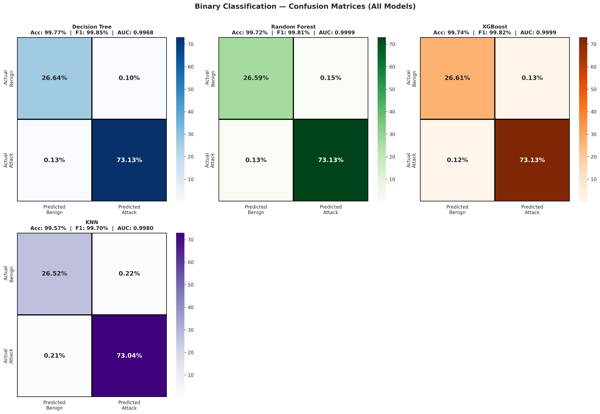
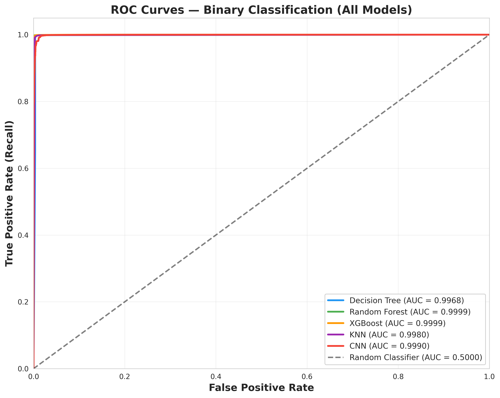
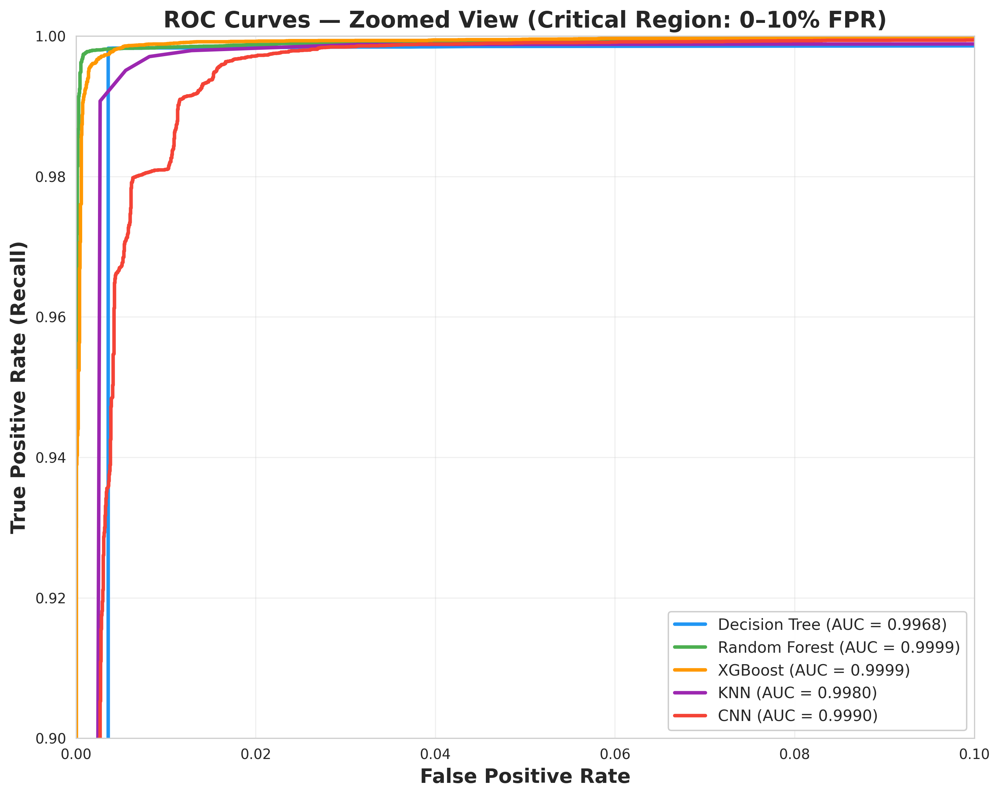
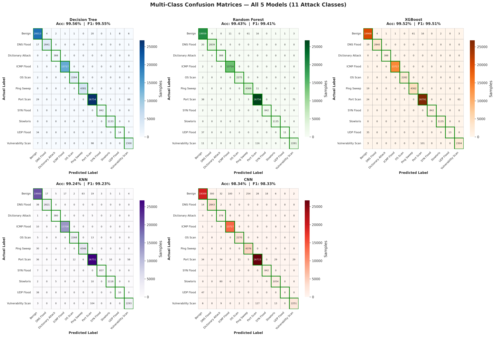
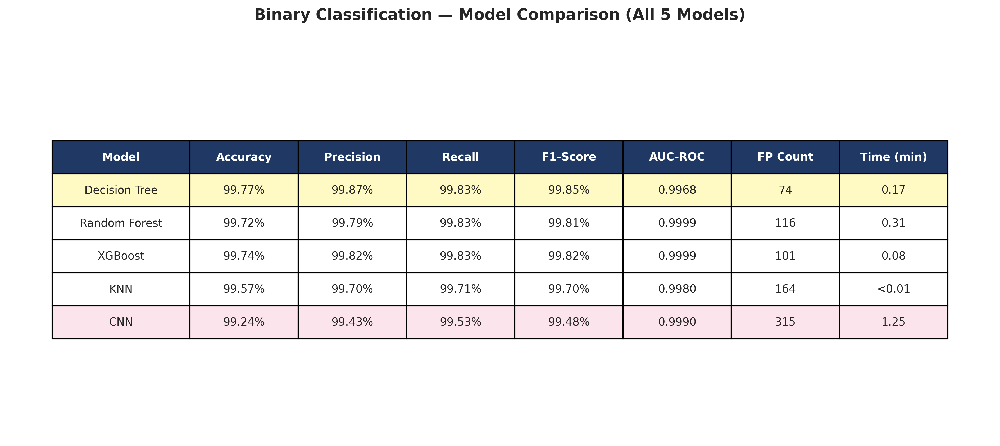
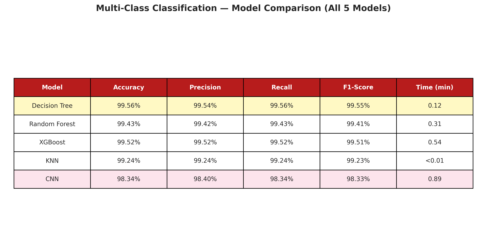
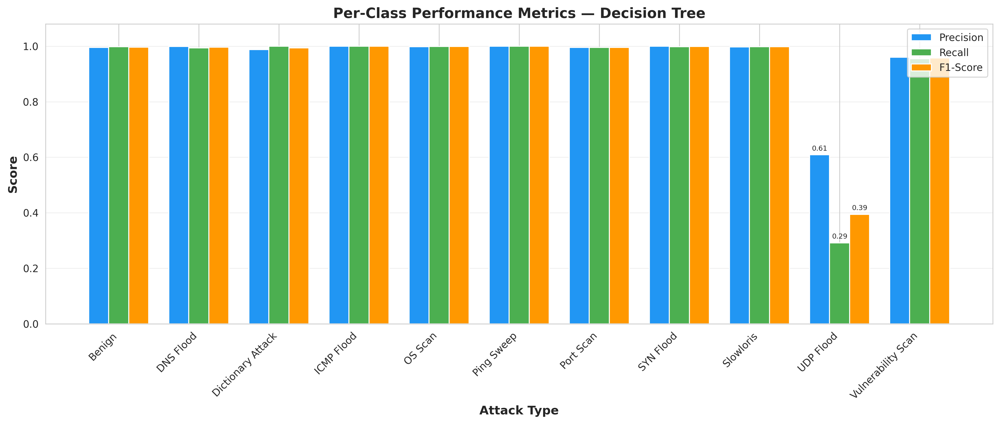
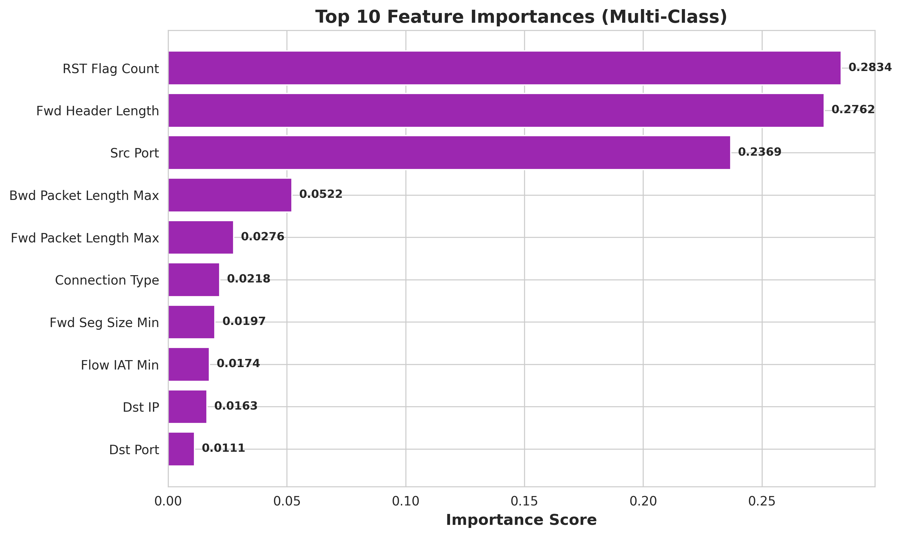
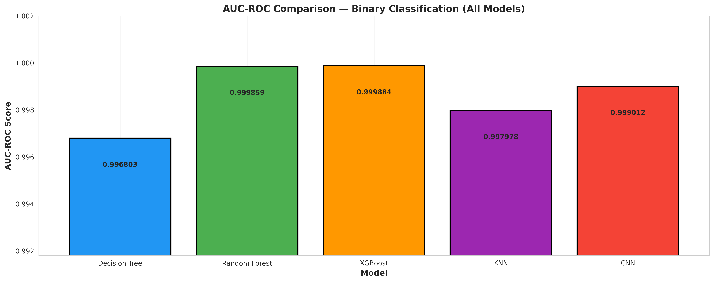
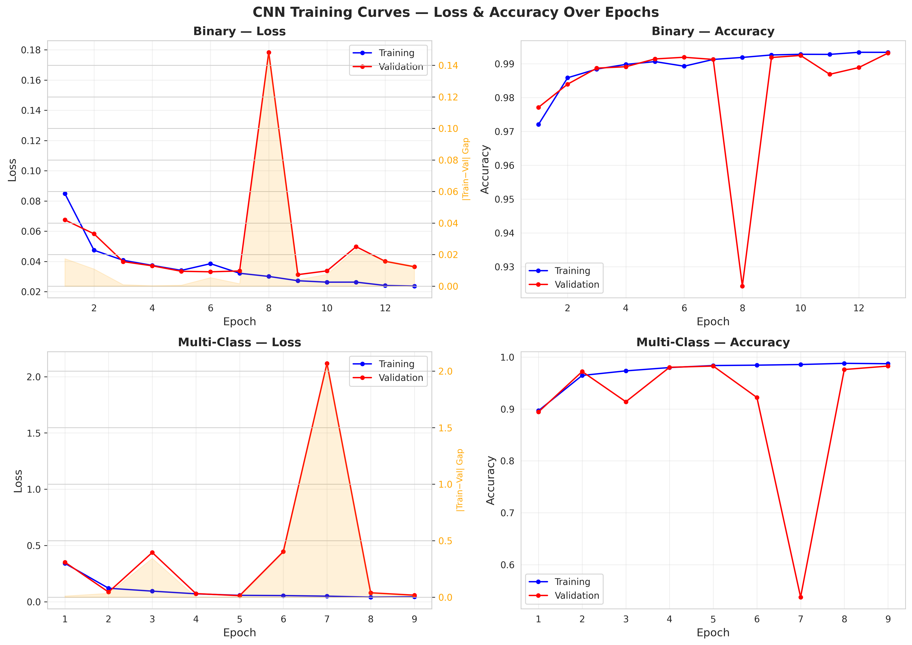
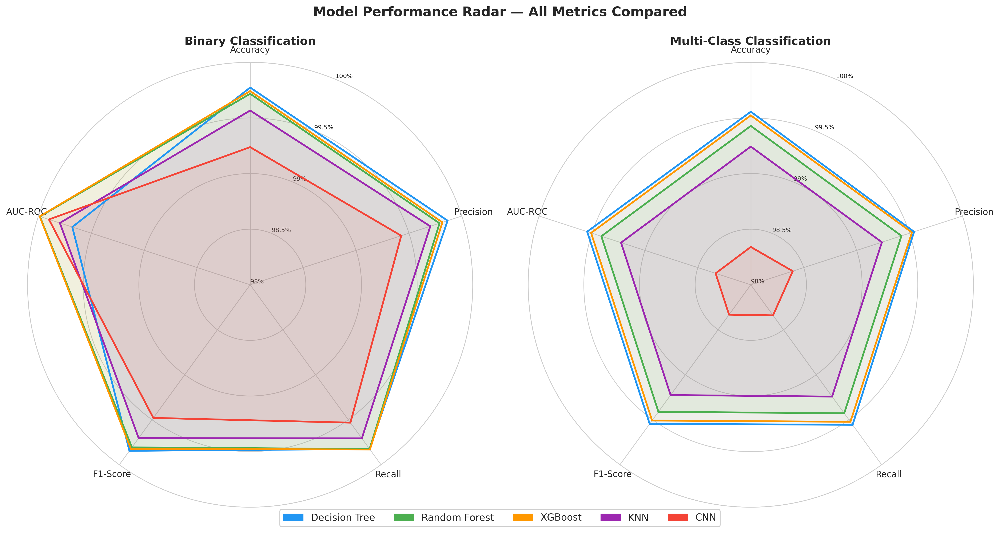
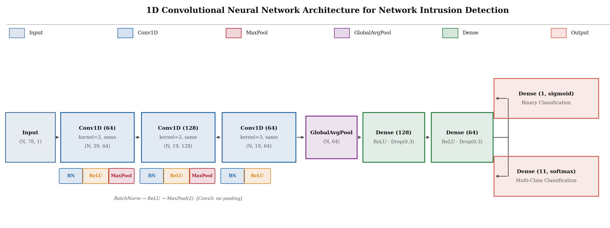